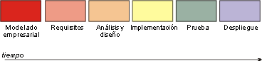
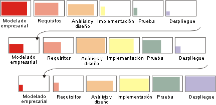
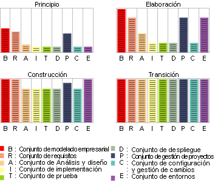

| Concepto: Iteración |
 |
|
| Elementos relacionados |
|---|
¿Qué es una iteración?La iteración incluye las actividades de desarrollo que dan lugar al release de un producto; es decir, una versión estable y ejecutable del producto, junto con los demás elementos periféricos necesarios para utilizar este release. Una iteración de desarrollo es, de algún modo, un recorrido completo por todas las disciplinas: requisitos, análisis y diseño, implementación y realización de pruebas, como mínimo. Es como un pequeño proyecto de cascada en sí mismo. Hay que tener en cuenta que se establecen criterios de evaluación cada vez que se planifica una iteración. El release tendrá una posibilidad planeada que es demostrable. La duración de una iteración varía en función del tamaño y de la naturaleza del producto, pero lo más probable es que se construyan múltiples compilaciones en cada iteración, según se especifica en el plan de creación de integración de la iteración. Esto es una consecuencia del continuo enfoque de integración recomendado en Rational Unified Process (RUP): a medida que van habiendo componentes probados en unidad disponibles, éstos se integran y, a continuación, se crea una compilación y se le realizan pruebas de integración. De este modo, la posibilidad del software integrado crece a medida que la iteración avanza, hacia los objetivos que se han establecido al planificar la iteración. Se podría argumentar que cada compilación representa en sí misma una mini-iteración, la diferencia reside en la planificación necesaria y en el nivel de formalidad de la valoración efectuada. En algunos proyectos, puede ser adecuado y conveniente construir compilaciones cada día, pero éstas no representarían iteraciones tal como las define RUP, excepto, quizás, en el caso de un proyecto muy pequeño de una sola persona. Incluso en pequeños proyectos de varias personas (por ejemplo, uno que implique a cinco personas compilando 10.000 líneas de código), sería muy difícil alcanzar una duración de iteración inferior a una semana. Para obtener una descripción de los motivos que lo explican, consulte el apartado Directriz: Plan de desarrollo de software. ¿Por qué la iteración?Tradicionalmente, los proyectos se han organizado para pasar por cada disciplina de forma secuencial, una y sólo una vez. Este enfoque da lugar al ciclo vital en cascada:  A menudo, el resultado es un "amontonamiento" de integración en un momento avanzado de la implementación, cuando, por primera vez, se compila el producto y empiezan a realizarse pruebas. Problemas que han permanecido ocultos durante las fases de análisis, diseño e implementación, salen a la superficie con fuerza y el proyecto se queda estancado porque empieza un lento ciclo de resolución de defectos. Una forma más flexible (y menos arriesgada) de proceder es pasar varias veces por las distintas disciplinas de desarrollo, consiguiendo una comprensión mayor de los requisitos, construyendo una arquitectura sólida, mejorando la organización de desarrollo y, finalmente, proporcionando una serie de implementaciones que son cada vez más completas. Esto es un ciclo vital iterativo. Cada recorrido por la secuencia de disciplinas de proceso se denomina iteración.  Por lo tanto, desde un punto de vista de desarrollo, el ciclo vital del software es una sucesión de iteraciones a través de las cuales el software se desarrolla de forma incremental. Cada iteración finaliza con el release de un producto ejecutable. Este producto puede ser un subconjunto de la visión completa, pero es útil desde algunas perspectivas de ingeniería o de usuario. Cada release va acompañado de productos de trabajo de soporte: descripción del release, documentación del usuario, planes, etc, así como de modelos actualizados del sistema. La consecuencia principal de este enfoque iterativo es que los productos de trabajo, descritos antes, crecen y maduran con el tiempo, como se muestra en el siguiente diagrama.  Evolución del conjunto de información a través de las fases de desarrollo. Objetivo menorCada iteración se finaliza con un objetivo menor, donde el resultado de la iteración se valora en relación con los criterios de éxito objetivos de dicha iteración en particular. |
© Copyright IBM Corp. 1987, 2005 Reservados todos los derechos |